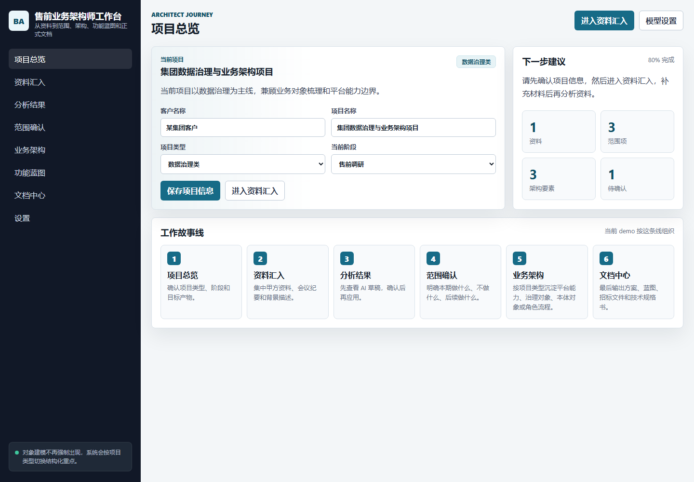
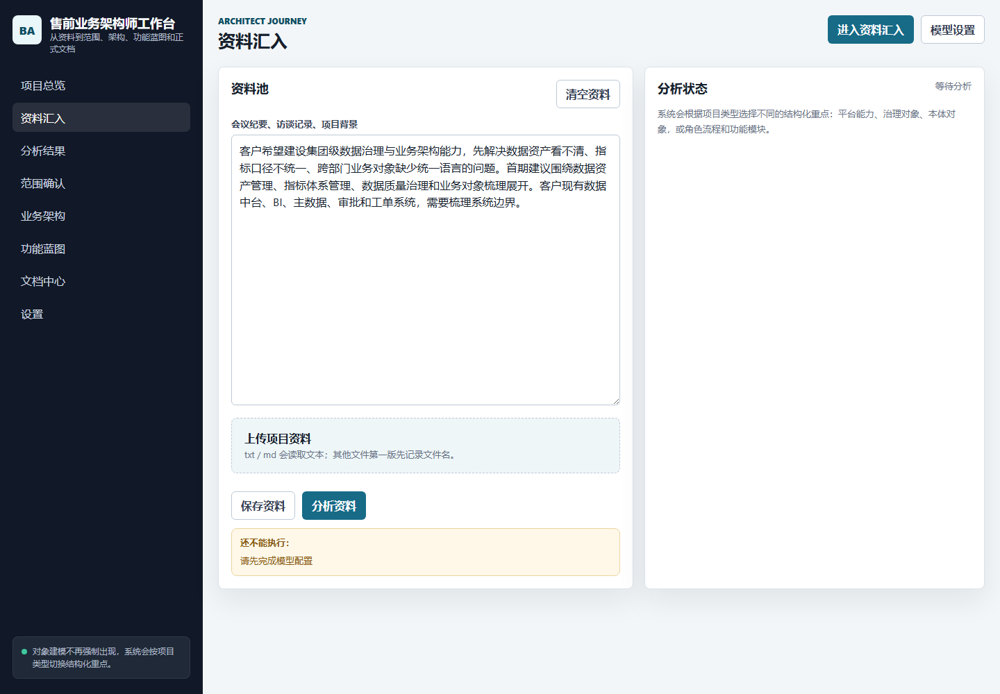
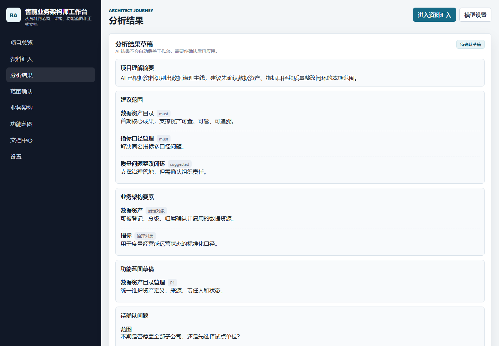
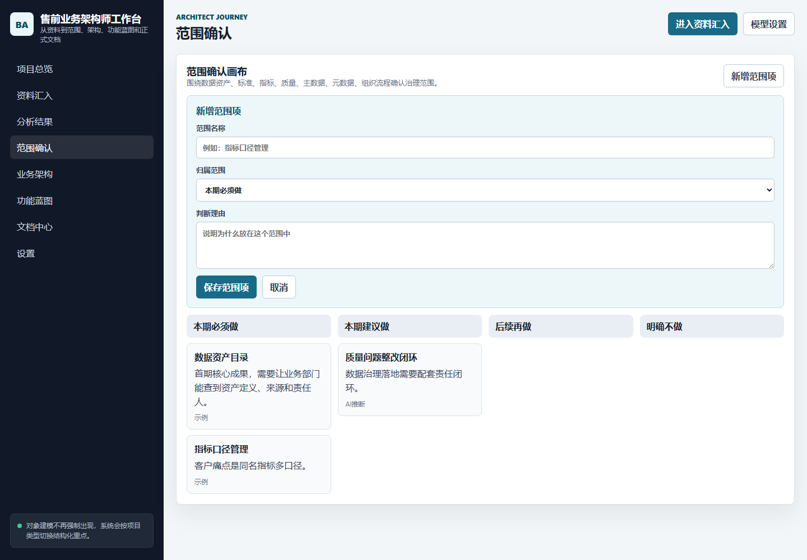
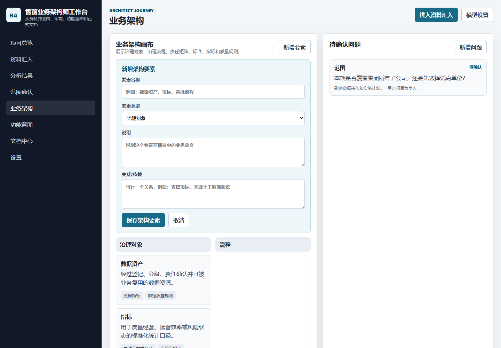
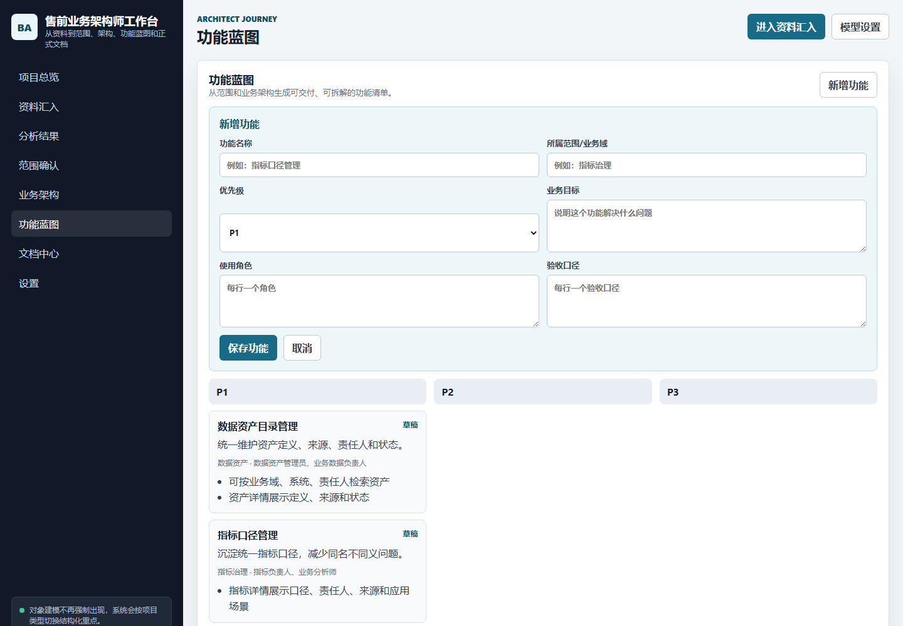
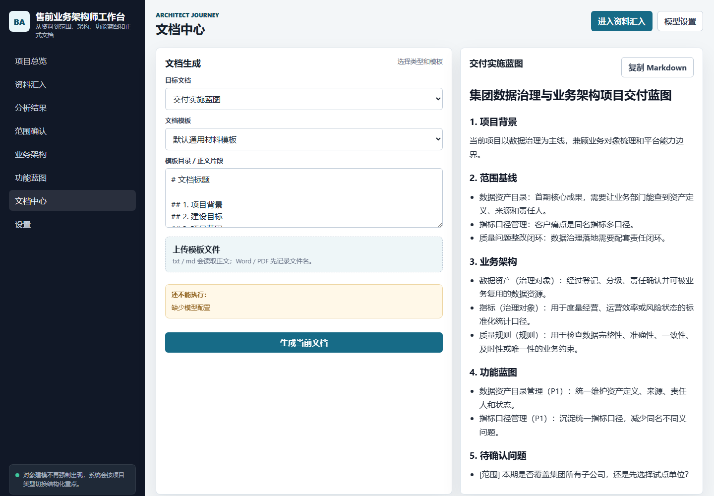

Formal Guide
本体建模类项目使用说明书
Ontology Modeling Project User Guide
本说明书面向售前业务架构师，说明如何使用工作台处理本体建模类项目：从甲方资料汇入，到业务对象、关系、属性、动作、规则和语义映射的结构化，再到功能蓝图和正式文档输出。
This guide is designed for pre-sales business architects. It explains how to use the workbench for ontology modeling projects, from collecting client materials to structuring business objects, relationships, attributes, actions, rules, semantic mappings, functional blueprints, and formal deliverables.
启动方式
Launch
如果你只阅读本说明书，可直接打开本 HTML。若要使用工作台，请在项目目录启动服务：
You can open this HTML directly for reading. To use the workbench, start the local service from the project directory:
cd "C:\Users\GarsenPC\Documents\New project"
npm.cmd run dev项目总览：选择本体建模类项目
Project Overview: Select Ontology Modeling
首先确认客户、项目名称、当前阶段，并把项目类型选择为“本体建模类”。这会让后续分析围绕对象、关系、属性、动作、规则和语义映射展开。
First confirm the client, project name, and current stage, then set the project type to “Ontology Modeling”. This makes later analysis focus on objects, relationships, attributes, actions, rules, and semantic mappings.
- 填写客户名称和项目名称。
- 项目类型选择“本体建模类”。
- 确认当前阶段，例如售前调研、方案设计或招标支持。
- 点击“进入资料汇入”。
- Enter the client name and project name.
- Select “Ontology Modeling” as the project type.
- Confirm the current stage, such as discovery, solution design, or tender support.
- Click “Go to Source Intake”.

资料汇入：准备本体建模输入
Source Intake: Prepare Ontology Inputs
本体项目最需要的输入包括业务术语、业务对象描述、系统清单、流程材料、数据资产清单、指标口径和访谈纪要。
Ontology projects need inputs such as business terms, object descriptions, system lists, process materials, data asset lists, metric definitions, and interview notes.
- 粘贴会议纪要、访谈记录、客户需求描述。
- 上传制度文件、业务流程文档、数据字典、指标清单。
- 点击“保存资料”只保存，不调用模型。
- 资料和模型配置齐备后，“分析资料”才会启用。
- Paste meeting notes, interview records, and client requirement descriptions.
- Upload policies, process documents, data dictionaries, and metric catalogs.
- “Save Sources” only stores the input and does not call the model.
- “Analyze Sources” is enabled only when both sources and model configuration are ready.

分析结果：先确认 AI 草稿
Analysis Results: Confirm the AI Draft First
AI 分析不会直接覆盖工作台，而是生成草稿。你需要确认它识别的对象、关系、功能和问题是否符合甲方语境。
The AI output does not overwrite the workbench directly. It first becomes a draft, and you decide whether it should be applied.
项目理解、建议范围、业务对象、对象关系、功能草稿、待确认问题。
应用到工作台、重新分析、返回补充资料、放弃本次结果。
Project summary, proposed scope, business objects, relationships, function drafts, and open questions.
Apply to workbench, rerun analysis, return to sources, or discard the draft.

范围确认：定义本体建模边界
Scope Confirmation: Define Ontology Boundaries
本体类项目的范围确认重点不是“功能越多越好”，而是明确本期建哪些对象、关系和规则，哪些留到后续。
For ontology projects, scope confirmation is not about adding more features. It is about defining which objects, relationships, and rules are included in the current phase.
- 本期必须做：核心业务对象、核心关系、关键规则。
- 本期建议做：对象与数据资产映射、语义检索场景。
- 后续再做：复杂推理、自动生成技术模型。
- 明确不做：超出本期交付边界的深度系统改造。
- Must-have: core business objects, key relationships, and critical rules.
- Recommended: object-to-data-asset mapping and semantic search scenarios.
- Later: advanced reasoning and automatic technical model generation.
- Out of scope: deep system transformation outside the current delivery boundary.

业务架构：沉淀本体结构
Business Architecture: Build the Ontology Structure
本体建模类项目在业务架构页重点维护业务对象、关系、属性、动作、规则和语义映射。
For ontology modeling projects, the architecture page focuses on business objects, relationships, attributes, actions, rules, and semantic mappings.
- 对象：客户、合同、项目、指标、数据资产、审批单等。
- 关系：客户拥有合同、合同关联项目、指标来源于数据资产。
- 属性：对象的关键业务属性，不是数据库字段设计。
- 动作：创建、审批、发布、归档、下线等业务动作。
- 规则：审批规则、发布规则、口径规则、权限规则。
- Objects: customer, contract, project, metric, data asset, approval request, and more.
- Relationships: customer owns contract, contract links to project, metric derives from data asset.
- Attributes: key business attributes of the object, not database field design.
- Actions: create, approve, publish, archive, deactivate, and other business actions.
- Rules: approval rules, publishing rules, metric definition rules, and permission rules.

功能蓝图：从本体结构生成功能
Functional Blueprint: Derive Features from Ontology
本体结构确认后，功能蓝图可以自然拆出对象建模、关系建模、属性维护、规则管理、语义检索、对象与数据映射等功能。
After the ontology structure is confirmed, the functional blueprint can derive capabilities such as object modeling, relationship modeling, attribute maintenance, rule management, semantic search, and object-to-data mapping.
- P1：对象建模、关系建模、属性维护、版本管理。
- P2：规则管理、对象与数据资产映射、语义检索。
- P3：复杂推理、自动推荐、跨系统高级联动。
- P1: object modeling, relationship modeling, attribute maintenance, and versioning.
- P2: rule management, object-to-data-asset mapping, and semantic search.
- P3: advanced reasoning, automatic recommendations, and cross-system orchestration.

文档中心：输出本体项目材料
Document Center: Generate Ontology Deliverables
最后再生成文档。适合本体类项目的输出包括本体建模方案、业务对象建模说明书、语义模型技术规格书、交付实施蓝图和招标文件技术章节。
Document generation should happen last. Suitable outputs include ontology modeling proposals, business object modeling specifications, semantic model technical specifications, delivery blueprints, and tender technical chapters.
- 选择文档类型。
- 选择默认模板或粘贴公司/甲方模板。
- 满足生成条件后点击“生成当前文档”。
- 生成后复制 Markdown，再进入 Word 或 PPT 排版。
- Select the target document type.
- Select a default template or paste a company/client template.
- Click “Generate Document” when all readiness checks are satisfied.
- Copy the Markdown output and continue formatting in Word or PowerPoint.
